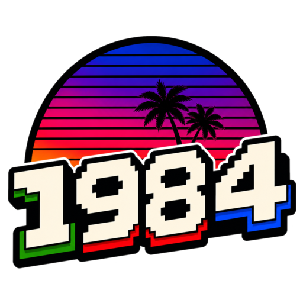

Drive A
No disk loaded
Amstrad CPC emulator
Javascript 1984
System monitor
Loading emulator...
Drive A
Input
Audio

Click display for keyboard
Drop DSK or CPR media here
RGB monitor
768 x 576 / Sharp
Transport
System
Media deck
Virtual transport
Cartridge
Select CPC 6128 Plus
Input channel
Port 1
Joystick: waiting for gamepad...
CPC joystick: idle
Mouse: disabled
Picture
Display control